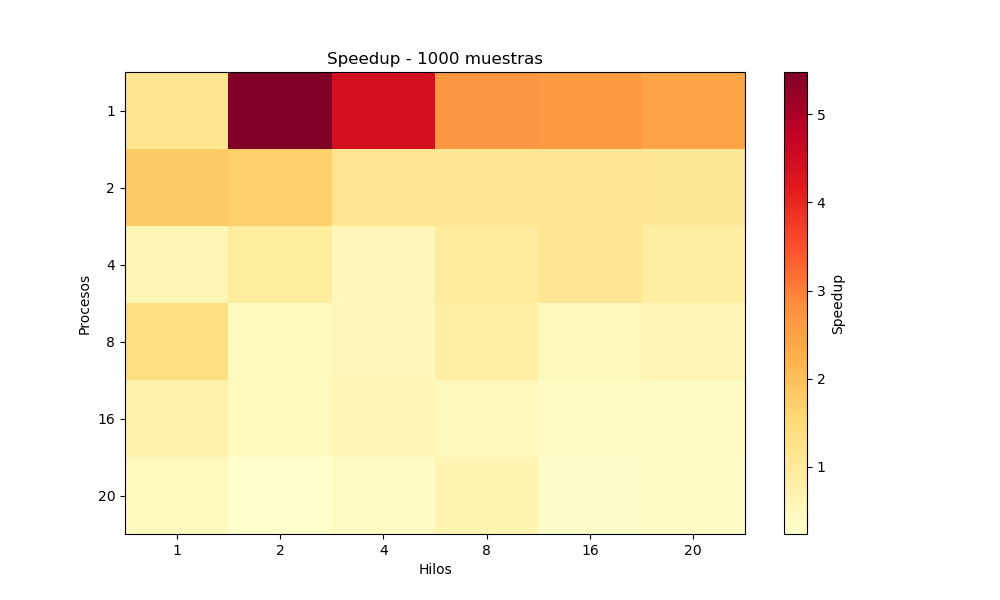
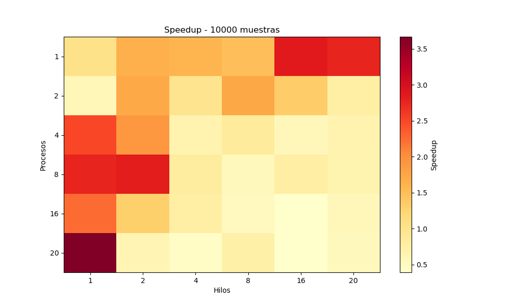
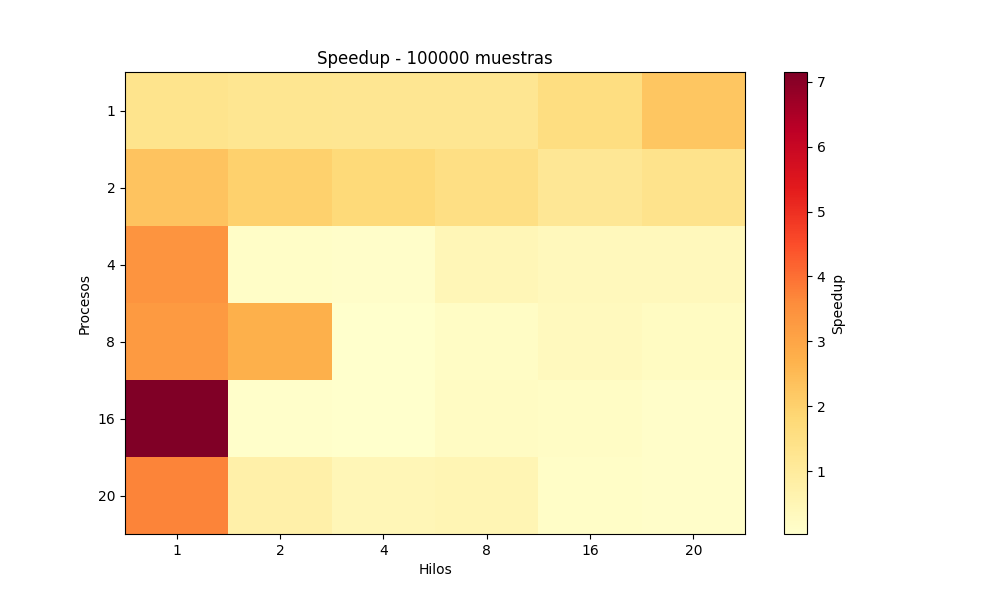
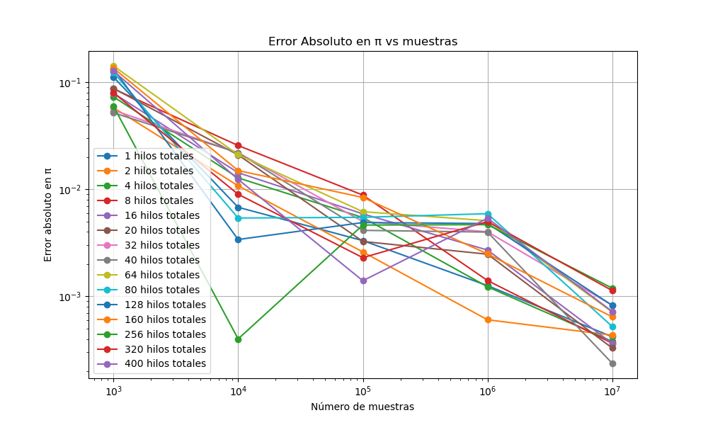

Visualización de Resultados - Monte Carlo con MPI + OpenMP
1. Heatmap de Tiempo Paralelo por Procesos y Hilos

Tiempo de ejecución paralela (en segundos) por número de procesos y hilos, para 1000 muestras.

Tiempo de ejecución paralela (en segundos) por número de procesos y hilos, para 10000 muestras.

Tiempo de ejecución paralela (en segundos) por número de procesos y hilos, para 100000 muestras.
2. Heatmap de Speedup por Procesos y Hilos

Speedup obtenido por número de procesos y hilos, para 1000 muestras.

Speedup obtenido por número de procesos y hilos, para 10000 muestras.

Speedup obtenido por número de procesos y hilos, para 100000 muestras.
3. Error Absoluto en π vs muestras

Diferencia entre el valor estimado de π y su valor real, analizada en función del número de muestras y total de hilos.
Volver
Volver al Inicio